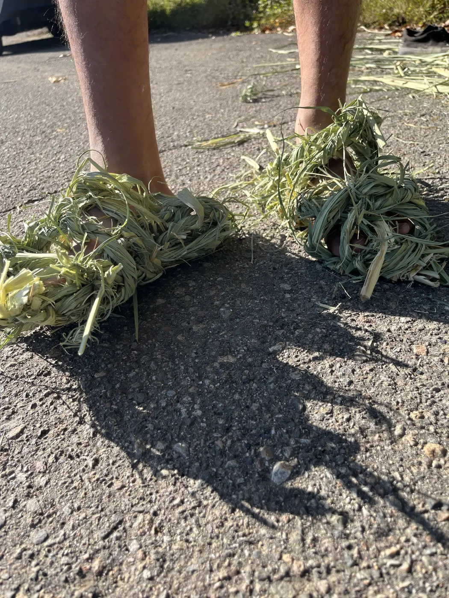
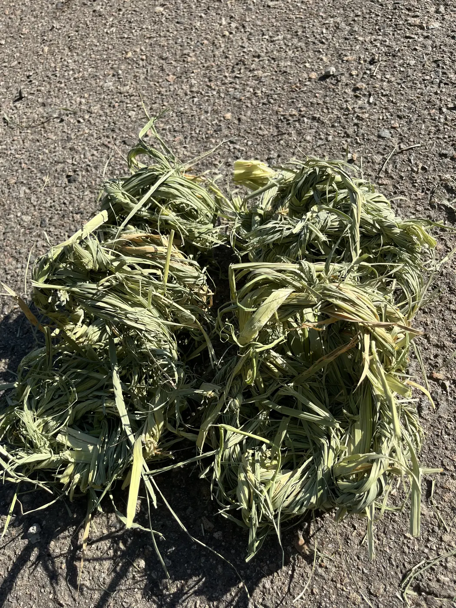
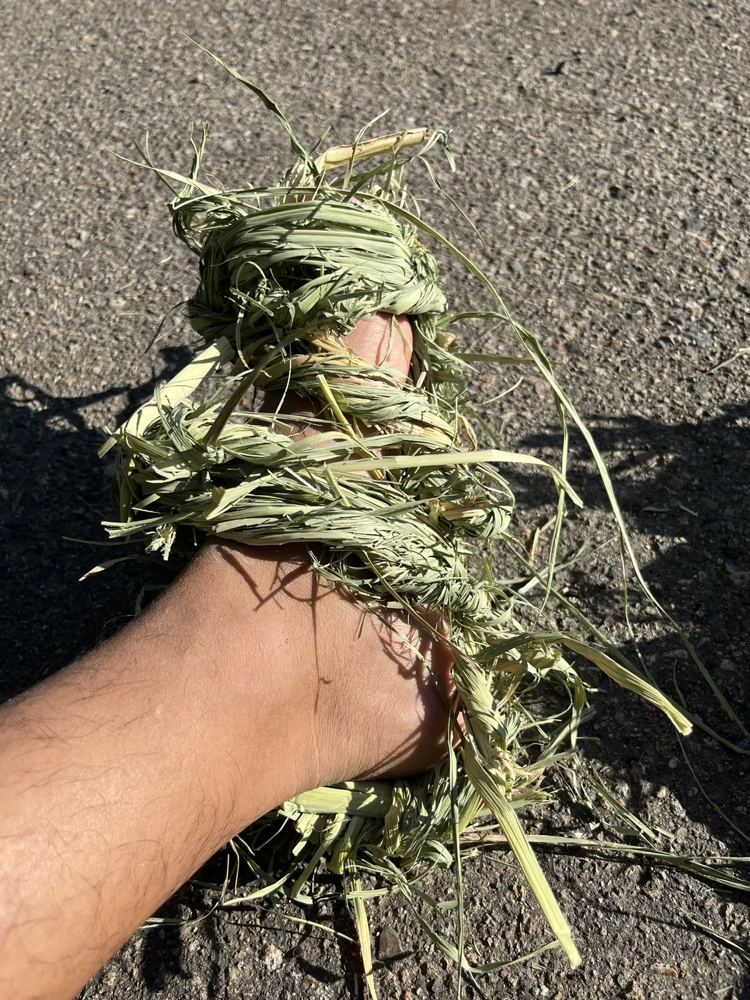

真菰の草履
採取して乾燥させた真菰を縄に綯い、自分の足へ合わせて組んだ草履です。素材の硬さを足裏で確かめる小さな生活道具です。
- Year
- 2025年
- Place
- 小院瀬見
- Materials / Method
- 真菰
What I tried
真菰は藁より太く硬いため、乾燥後の縮みと折れを見ながら縄の太さを決めました。既成寸法へ合わせず、途中で足を置きながら鼻緒と輪郭を調整しています。昼寝道具と同じ素材研究から分かれた、身体と土地の接点です。


